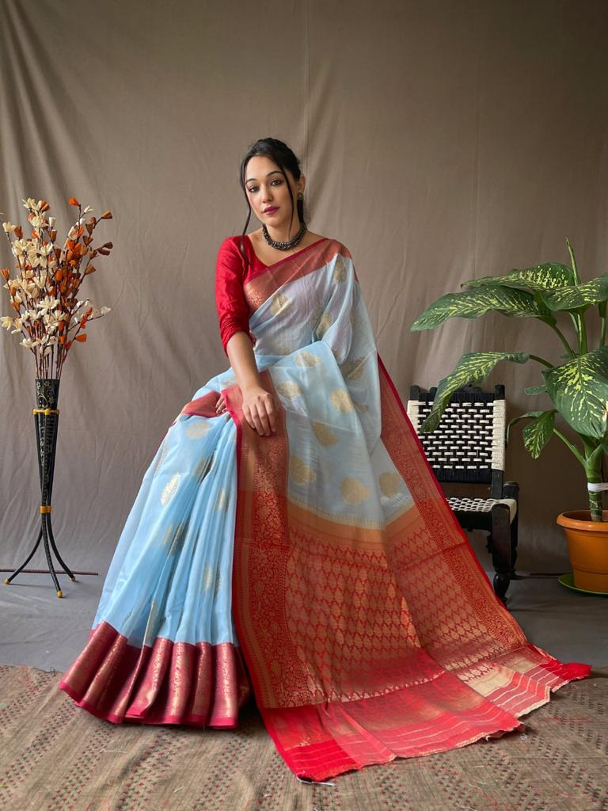

An eminent geographical indication, Mysore silk saree find their home in the state of Karnataka.
The history of Mysore silk sarees can be traced back to the 1790s, when Tipu Sultan, the ruler of Mysore at the time, received a silk cloth from the ambassador of China's Qing Dynasty's royal court. This intrigue led him to send envoys to China and Bengal to source silkworms for local production
Mysore silk sarees are made from pure mulberry silk that is hand-woven in Karnataka. The process of making Mysore silk sarees involves the following steps: 1. Rearing of silkworms 2. Harvesting of cocoons 3. Processing of cocoons 4. Reeling of silk 5. Spinning of silk 6. Weaving of silk
